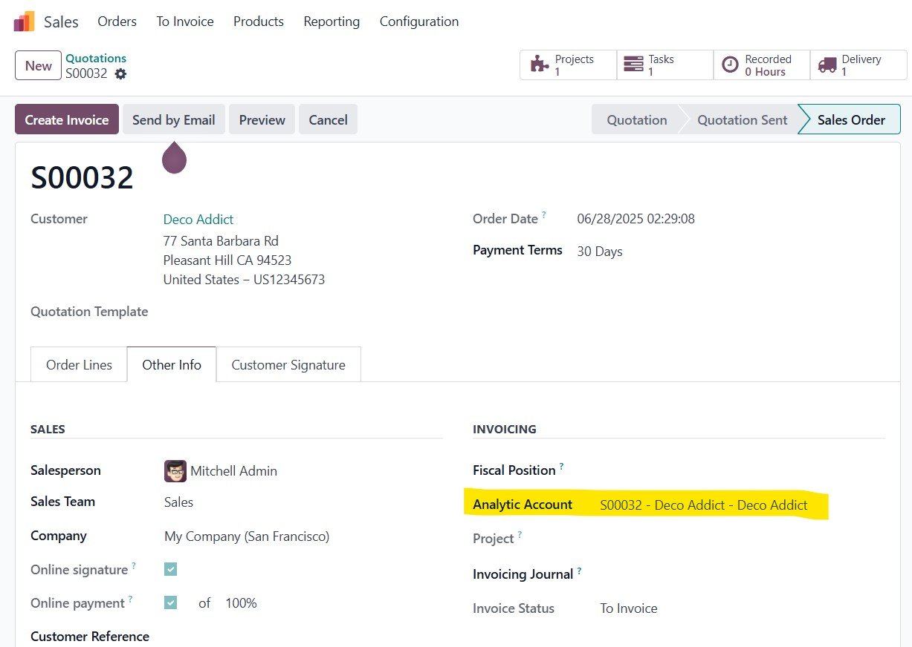
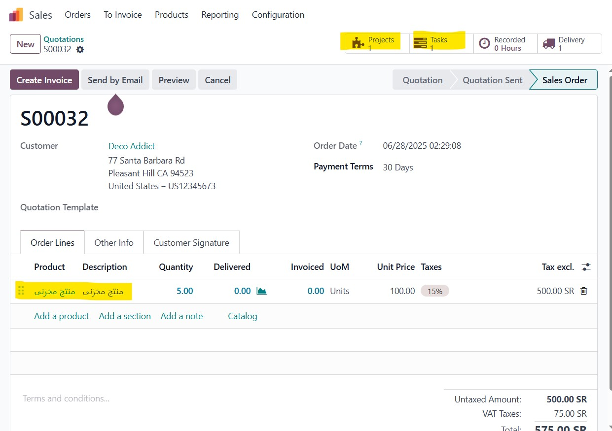

2. Sale Order Behavior
Sale order lines using storable products behave like services, supporting task creation and more.

This module customizes Odoo to allow storable products (type='product') to support features typically exclusive to service products.
S00039-Customer-Name)Track revenue/costs using analytic accounts generated by the product.
Sale order lines using storable products behave like services, supporting task creation and more.
Configure the storable product to behave like a service, including delivery method and project settings.

Automatically generate projects and tasks when this product is sold.
